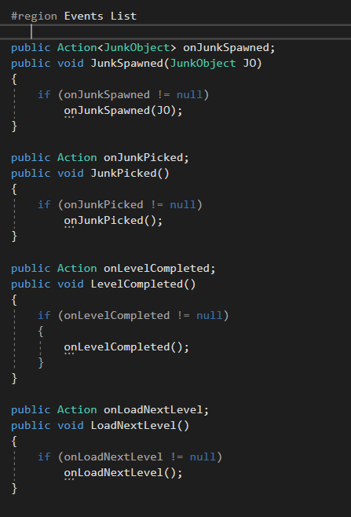

Dross
Intro Gameplay
Overview
A top down 2d game that combines pixel and hand drawn art. Developed for the game jam, Sea Jam 2021, as part of MrBeast's ocean clean up activity, Dross follows the titular humanized hermit crab who acquired a metal detector and uses it to try to find treasure while accidentally cleaning up the sea.Goal
I wanted to create a simple gameplay loop with priorities toward the art and story. The pixel art was made in Aseprite and the character art was made in Medibang. The overall theme of the game is to promote beach cleanup, and that even with ulterior motives, one can make their environment a better place.Development
Dross was born out of a desire to create a game that combined a simple, engaging gameplay loop with a character-driven story. With the theme of ocean cleanup as the foundation, I aimed to design a game that felt both meaningful and fun to play. Given the one-month time limit for Sea Jam 2021, I leaned into my strengths: top-down 2D games and dialogue systems.Designing the Core Mechanics
The first step was to establish the core gameplay loop. I wanted a simple mechanic that aligned with the ocean cleanup theme, so I settled on having the player walk up to trash and pick it up. This required implementing basic top-down movement and collision detection. Using Unity’s 2D physics system, I created a player controller with movement inputs and a collision box to interact with trash objects.However, I quickly ran into a problem: how would the game track the trash collected in each level? My initial thought was to have the game manager search for all objects tagged as "trash," but I realized this approach would be inefficient and costly, especially as the number of trash objects increased.
To solve this, I designed an event system. When a trash object is spawned, it emits a signal, and the game manager listens for these signals. This way, the game manager only tracks relevant objects, reducing performance overhead. The game manager also handles displaying player progress, such as the number of trash items collected and the remaining items in the level.

Structuring the Game
Since Dross was designed as a level-based game, I needed a way to manage story progression alongside gameplay. I decided to use visual novel-style scenes to tell the story, with scenes triggered at the beginning and end of each level. The game manager would handle these transitions, ensuring the story unfolded seamlessly.However, this system felt too rigid. It didn’t allow for dialogue scenes to occur during gameplay, which limited the narrative’s dynamism. To address this, I redesigned the dialogue system to include collision-based triggers. Levels were designed with narrow pathways or specific areas where players would naturally encounter these triggers. Once the final trigger in a level was activated, the game manager would transition to the next scene.
Building the Dialogue System
For the dialogue system, I wanted something more dynamic than manually managing long strings or parsing text files. Drawing from my previous project, *Royal Flower Picker Hanae*, I decided to use the **Inkle’s Ink Integration** plugin. This plugin allowed me to write dialogue in a structured format, with tags for character names, expressions, and other metadata.I wrote a script to process Ink objects, extracting the relevant data and connecting it to the UI system. This enabled the game to display visual novel-style scenes with character sprites, names, and dialogue. To manage character sprites, I created a Character Manager object, which stored an array list of character classes. Each class contained the character’s name and their sprites for different expressions.
While this approach worked, it had its limitations. For example, if I needed to change a character’s name, I had to update it in both the Character Manager and the Ink dialogue files. This lack of flexibility was a trade-off I accepted due to the time constraints of the game jam.

Designing the Characters and Story
The narrative and character design were central to *Dross*. I chose a hermit crab as the protagonist because of their natural scavenging behavior, which fit the theme of collecting treasure (and inadvertently cleaning up the ocean). For the supporting cast, I researched various fish and sea creatures, designing each character with a distinct color palette and personality.The story was structured around each level introducing a new character, with their personal conflicts tied to the ocean’s pollution. This approach allowed me to weave the cleanup theme into the narrative while keeping the focus on the characters.
Because I was setting this within the ocean, I designed the characters around various fish and sea creatures, each design having a distinct motif to help indicate what animal they were based on.
- Dross - Hermit Crab
- Sai - Red Salmon
- Mancy - Blue Mackerel
- Tillie - Sea Turtle
- Angela - Angler Fish
- Sera - Starfish
- Gawr Gura - Shark

I tried to go for a variety of colors to help make each character stand out from each other. Gawr Gura was an extra addition I included as a bonus character since I like VTubers and she fit the theme of the game as well. All the art for the characters was created in MediBang, my go-to drawing program. I also created 2-3 expressions for each character to display their emotions through the dialogue sections. They were exported as .PNG files so I could easily integrate them into the visual novel scenes.